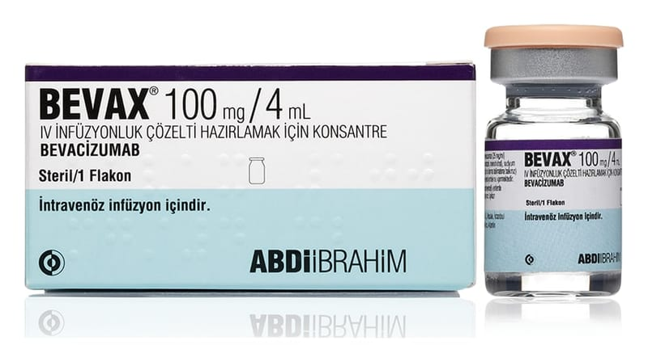

Bevax 100 mg/4 ml IV İnfüzyonluk Çözelti Hazırlamak İçin Konsantre, 1 Adet

Ne için kullanılır
KT · Bölüm 1Her bir BEVAX kutusu içinde bir adet flakon bulunur. Bu flakon 4 mL hafifçe opak, renksiz ila soluk kahverengi steril konsantre sıvı içerir. Konsantre damar yoluyla verilecek infüzyon çözeltisi hazırlamak için kullanılmadan önce seyreltilmelidir. BEVAX, Çin Hamsteri over hücresinde rekombinant DNA teknolojisi ile üretilen bir rekombinant hümanize monoklonal antikor (vücudun enfeksiyonlara ve kansere karşı savunmasına yardımcı, normalde bağışıklık sistemi tarafından üretilen bir tür protein) olan, bevacizumab etkin maddesini içeren bir biyobenzerdir. Bevacizumab seçici olarak vücutta kan
ve lenf damarlarının yüzeyinde bulunan insan vasküler endotelyal büyüme faktörü (VEGF) isimli proteine bağlanır. VEGF proteini tümörlerin içinde kan damarlarının gelişmesine neden olur, bu damarlar tümöre besin ve oksijen taşır. Bevacizumab VEGF’ye bağlandığında, tümöre besin ve oksijen taşıyan kan damarlarının gelişimini engelleyerek tümörün büyümesini engeller. BEVAX yayılmış kalın bağırsak (kolon veya rektum) kanserinin tedavisinde kullanılan bir ilaçtır. BEVAX, 5- florourasil/folinik asit veya 5-florourasil/folinik asit/irinotekan ile kombine olarak metastatik kolon ve metastatik rektum kanserinin birinci basamak tedavisinde kullanılır. Daha önceki basamaklarda BEVAX’ın kullanılmadığı durumlarda 5-florourasil/folinik asit veya 5- florourasil/folinik asit/irinotekan ile birlikte ikinci ve sonraki basamaklarda kullanılır. BEVAX, daha önce adjuvant amaçlı kemoterapi almamış olan metastatik kolon veya rektum kanserli hastalarda, birinci basamak tedavi olarak okzaliplatin ile kapesitabin veya 5- fluorourasil/folinik asit ile birlikte kullanılır. BEVAX ayrıca glioblastoma adı verilen bir çeşit beyin kanserinin tedavisinde kullanılır. BEVAX glioblastoma tedavisinde kullanılırken, kemoterapi ile birlikte uygulanacaktır. BEVAX ayrıca inatçı, tekrarlayan veya metastatik (tümörün oluştuğu yerden vücudun diğer bölgelerine yayılması) serviks kanserinin (rahim ağzı kanseri) tedavisi için kullanılır. BEVAX, rahim ağzı kanserinin tedavisinde paklitaksel ve sisplatin veya platin içeren tedavi alamayacak hastalarda paklitaksel ve topotekan ile birlikte uygulanacaktır.